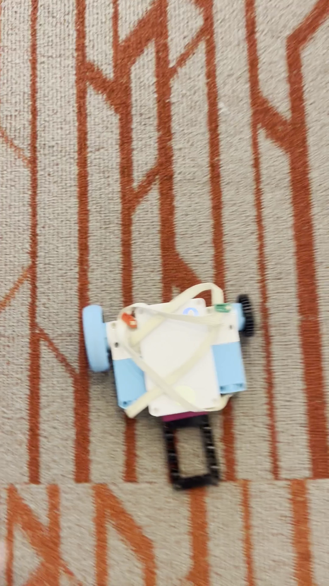

This project uses reinforcement learning to teach a LEGO SPIKE “Silly Walks” robot, built with deliberately lopsided legs, to walk in a straight line and become a Smart Walker. The robot earned rewards when it moved in the direction it started and lost points when it veered off course. At first, it moved randomly until it happened to earn points, so it took many training runs before it began learning which movements helped it stay on course. As it learned, its Q-table filled with actions, which we could visualize to see what the robot had figured out. The result was a robot that went from flailing around to walking in a straight line.